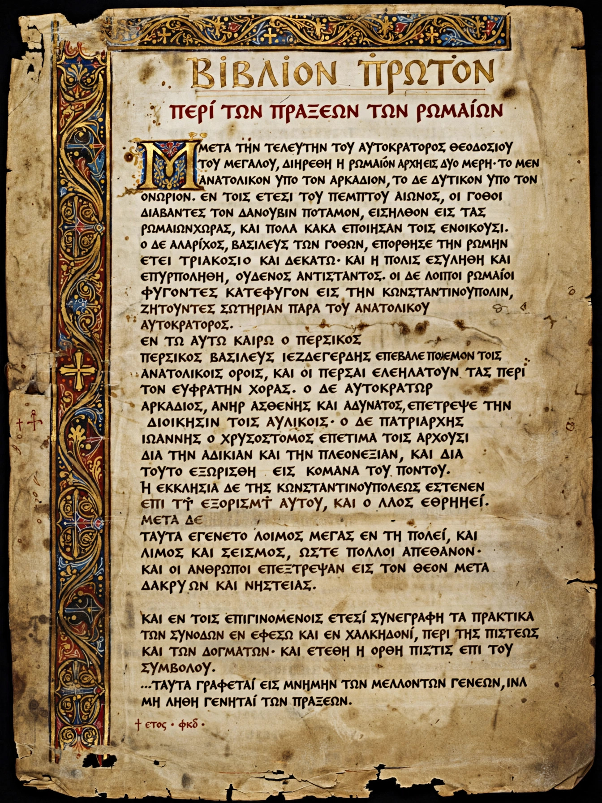

Procopius
| Procopius of Caesarea | |
|---|---|
| Born | c. AD 500 Caesarea Maritima, Palaestina Prima |
| Died | c. AD 565 (possibly after 562) Constantinople |
| Occupation | Historian, legal adviser (assessor) to Belisarius |
| Works | History of the Wars; Secret History; Buildings |

Procopius of Caesarea (Greek: Προκόπιος ὁ Καισαρεύς; c. 500 – c. 565) was a prominent late antique Greek scholar and historian from Caesarea in Palestine. As legal adviser and secretary to the general Belisarius, he accompanied the armies of the emperor Justinian I through the reconquest of North Africa and Italy, and his History of the Wars is the principal narrative source for Justinian's reign. He is equally famous for the posthumously published Secret History (Anekdota), a venomous exposé of Justinian, his wife Theodora and Belisarius, and for the Buildings, a panegyrical catalogue of Justinian's construction works. The contrast between his official and secret writings has made him a central figure in debates about historiography under autocracy.
Life
Procopius was born in Caesarea Maritima and probably received the rhetorical and legal education typical of his class. In 527 he became assessor (symboulos) to Belisarius, then commander in Mesopotamia, and accompanied him against Persia, on the expedition that destroyed the Vandal kingdom in North Africa (533–534), and in the Gothic War in Italy, including the siege of Rome (537–538). He was present in Constantinople during the plague of 542, which he described in terms consciously modelled on Thucydides' account of the plague of Athens. By the 550s he held a senior post in the capital; he may be the Procopius who was urban prefect of Constantinople in 562.
Works
The Wars, in eight books, recounts the Persian, Vandal and Gothic wars in a classicising style modelled on Herodotus and Thucydides, generally sober and well-informed for events he witnessed. The Buildings (c. 554–555) praises Justinian's fortifications, churches — above all Hagia Sophia — and public works across the empire. The Secret History, written about the same time but unpublished until long after his death (it was first printed in 1623), portrays Justinian as a demon-haunted tyrant, Theodora as a depraved former actress, and Belisarius as a weak cuckold — a picture modern historians treat as a rhetorical inversion of panegyric, valuable for its grievances about taxation, confiscation and imperial arbitrariness, but not as literal fact. Whether all three works are by the same author was once doubted; their unity is now generally accepted.
See also
Justinian I · Belisarius · Theodora · Gothic War (535–554) · Secret History